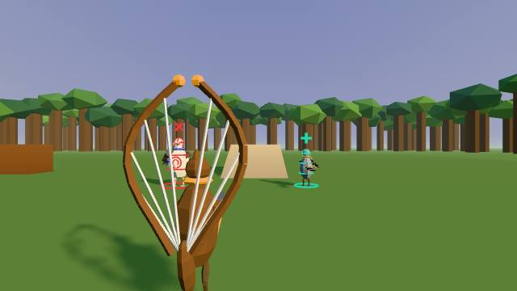
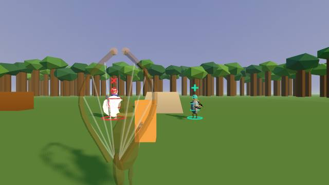
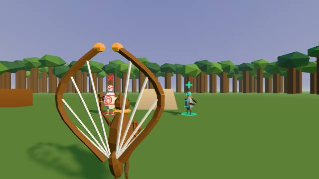

Lyrebird Playable
Support · Playable since Stage 2
Appearance: slim brown body under an enormous tail: two curved outer plumes form a lyre arching above the head, filled with fine silver filaments that shimmer when it sings. Reads as "small body, huge lyre shape above it".
How to play
Supports keep allies alive and fights fair. Stay close to your carries, heal and shield early, and save your ultimate for the moment the fight turns.
Lyrebird fights with the Echo Lute, which fires travelling projectiles you have to lead. Damage drops off between 15 m and 35 m, and head hits are beak shots worth ×1.65. Every level above 1 is a Molt: +32 max HP per level; +3% gun damage of base per level; +1 Song power per level; +3 melee damage per level.
Keep Mended Song for the ally taking the most damage. Echo Double draws shots away from you. Cast Discord on a group of enemy shooters, then back off.
Abilities
Four abilities. Slots 1 to 3 unlock at level 1, the ultimate at level 6. Each can be upgraded three times, for 1, 2, 5 AP, in order; see Ability Points. The shortest cooldown in the kit is Mended Song at 13 s.

1. Mended Song
Heal the ally in your sights (you if none) 100 + 1.0 x SP at once and 50 + 0.4 x SP more over 4 s. Two charges.
- Tier 1 · 1 AP+40 instant heal (140 + 1.0 x SP) heal +40
- Tier 2 · 2 APAlso +15% Talon resist for 4 s
- Tier 3 · 5 APAlso cleanses negative statuses

2. Echo Double
A decoy of you (150 + SP HP) runs along your aim for 6 s and shoots the nearest enemy within 25 m (4.8 Talon a shot) while you are invisible for 2 s.
- Tier 1 · 1 APDecoy HP +150 (300 + SP) hp +150
- Tier 2 · 2 AP2 decoys, 15° either side of your aim decoys +1
- Tier 3 · 5 APDecoys burst on death or expiry: 4 m radius, 80 + 0.8 x SP Song damage, disarm 1.5 s burst +4

3. Discord
A burst within 25 m: enemies in 6 m take 70 + 0.7 x SP Song damage and are disarmed 1.5 s.
- Tier 1 · 1 AP+1.5 m radius (7.5 m) radius +1.5
- Tier 2 · 2 APDisarm +0.75 s (2.25 s) disarm +0.75
- Tier 3 · 5 APEnemies hit take +20% damage from all sources for 4 s

4. Grand Chorus
Channel for 5 s: every second allies within 14 m heal 45 + 0.4 x SP and get +20% Talon and Song resist, and enemies are slowed 20%. You move at 60% speed and cannot shoot.
- Tier 1 · 1 AP+4 m radius (18 m) radius +4
- Tier 2 · 2 APAllies also get +15% fire rate
- Tier 3 · 5 APYou can shoot and move at full speed while channelling
Since Stage 2. See all heroes.